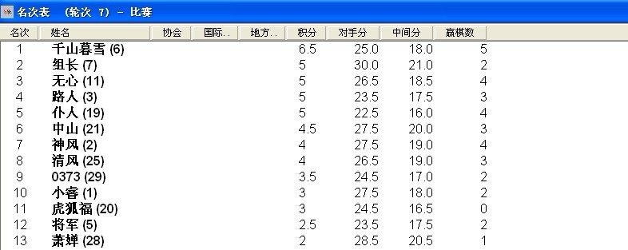

2011【茗弈】alababy杯比赛最后成绩
#1 2011【茗弈】alababy杯比赛最后成绩作者：冰霜 发表时间：2012-1-10 10:06:59
［此帖子已被 自来水 在 2012-1-10 10:09:11 编辑过］
［ 茗弈宽容 于 2012-1-10 10:09:39 时奖励此帖[金币加 100 威望加1］
［ 无罪释放 于 2012-1-10 14:50:12 时花20金币送鲜花一朵］
［ 卢老师 于 2012-1-10 16:00:12 时花20金币送鲜花一朵］
［ 【茗弈】恶魔宝贝 于 2012-1-11 19:24:42 时花20金币送鲜花一朵］
［ 【茗弈】恶魔宝贝 于 2012-1-11 20:14:02 时花20金币送鲜花一朵］
［ 弱惜 于 2012-1-12 8:32:23 时花20金币送鲜花一朵］
［ 丁香花开 于 2012-1-13 23:05:49 时花20金币送鲜花一朵］
［ 丁香花开 于 2012-1-13 23:06:02 时花20金币送鲜花一朵］
#2 Re:2011【茗弈】alababy杯比赛最后成绩作者：冰霜 发表时间：2012-1-10 10:20:10
［ 卢老师 于 2012-1-10 16:00:27 时花20金币送鲜花一朵］
#3 Re:2011【茗弈】alababy杯比赛最后成绩作者：【茗弈】恶魔宝贝 发表时间：2012-1-11 20:24:35
最近一段时间很忙，本来还想写个什么总结之内的， 既然冰霜已经把成绩公布鸟，偶就偷个懒。再一次感谢alababy童鞋的赞助，还有裁判妙手的辛苦编排、及裁判小筑，丁香、禅雨，花落，大海、翩若，特别说明的是幕裁判，幕和我一样，每年都是裁判。这次也不例外。之前一直不见她在线，也没说过话以为她不会来，结果她准时到场。我很感动，茗弈有你们的支持，一定会越来越壮大！！
既然冰霜已经把成绩公布鸟，偶就偷个懒。再一次感谢alababy童鞋的赞助，还有裁判妙手的辛苦编排、及裁判小筑，丁香、禅雨，花落，大海、翩若，特别说明的是幕裁判，幕和我一样，每年都是裁判。这次也不例外。之前一直不见她在线，也没说过话以为她不会来，结果她准时到场。我很感动，茗弈有你们的支持，一定会越来越壮大！！
［ 茗弈宽容 于 2012-1-12 10:59:57 时奖励此帖[金币加 100 威望加1］
［ 丁香花开 于 2012-1-13 23:06:59 时花20金币送鲜花一朵］
#4 Re:2011【茗弈】alababy杯比赛最后成绩作者：弱惜 发表时间：2012-1-12 8:32:03
祝贺千山暮雪，名位裁判辛苦了。#5 Re:2011【茗弈】alababy杯比赛最后成绩作者：茗弈宽容 发表时间：2012-1-12 11:05:32
慕是我妹妹，进社很多年了，最近因为学习和家里事比较多才很少来，比赛我知道她肯定会来滴，每年都没缺席过。这次比赛本人最感谢的是妙手和宝贝妹妹的辛劳编排裁决，最感动的是禅雨家里本来有很重要的事，但比赛那天也放下了赶回来！感谢所有裁判的付出，感谢所有选手的努力！茗弈因你们而更精彩！［ 【茗弈】恶魔宝贝 于 2012-1-14 17:26:11 时花20金币送鲜花一朵］